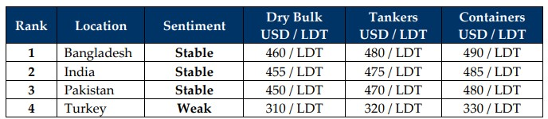

GMS Week 02 – SANCTION STATION!
in Weekly Demolition Reports 13/01/2025

This week earmarked President Biden placing sanctions against China’s national shipping arm COSCO, on the basis of the company being a part of the Chinese military, blacklisting its energy / tanker division. In fact, the octogenarian went on quite the sanction spree this week with the U.S. reportedly sanctioning over 180 vessels and dozens of entities in Russia as well, in what has turned out to be an unprecedented Russia crackdown in the final days of his presidency. Although experts in the field are quick to affirm that China’s COSCO sanction would likely not have the same impact as the 2019 sanctions did, but energy costs for nations on COSCOs supply-chain routes will likely face inflationary hiccups in the interim, the far-reaching effects of which are yet to be realized. Even oil futures reported hiccups towards the end of the week as the immediate effects on COSCO and Russia sent the barrel soaring to US$ 76.57 / barrel, a level not seen since last October. Additionally, the Baltic Index Dry Freight Index for dry bulk commodities jumped 8.2% by Friday, marking a second-consecutive week of firming rates. Still, the recycling traffic in both India and Bangladesh continued to surprise and impress (especially in India), where the water fronts reported a busy week of arrivals and deliveries. The pre-existing state of global economies also continues to persist in the wake of the unfolding present as the U.S. Dollar continues to hammer recycling nation currencies marking noteworthy increases by the week – including this one. Even steel prices affecting the ship recycling markets including domestic levels saw a weakening this week, with China leading the way in declining / cheaper steel that remains globally available. How far will India’s ongoing steel tariffs assist Alang’s ongoing performance, whilst Pakistani levels are just a hair away from an impending drop, remains to be seen.
Meanwhile, the various ship recycling nations endured another week of mixed performances as there has already been a marked contrast in terms of actually workable candidates compared to a very muted 2024, which saw the lowest volumes of overall units sold for recycling in over a decade. Indeed, and as stated above, several high profile and large(r) LDT vessels are being offered for sale this week, including a bevy of LNGs and Panamax bulkers, after a slower period of time where specialist small(er) LDT units, handy bulkers, and reefers remained the primary diet for sub-continent ship recyclers for a bulk of the year. It will therefore be interesting to see what finally becomes of these particularly old and sanctioned assets with nowhere to take them, or will they just be left to rot / become abandoned hazards at sea? With the HKC also gearing up to come into effect by the middle of this year, and yards yet to expeditiously gear up and align their operations with the requirements of the convention, it is likely that 2025 will be another hallmark year characterized by volatility, extreme and unpredictable moves / events that can turn markets in an instant, and financial worries for those yards that have redirected and even borrowed funds for yard upgrades and may end up suffering through ongoing tonnage shortages that deter their recovery from their financial liabilities. Prices are therefore likely to present their share of volatility over the course of the year, highlighted by the unfolding sanctions that would affect the supply of vessels, especially in the short-term. While the sub-continent ship recycling destinations continue on from last week in relatively the same state without much fanfare as this week winds up, not much remains changed, even in Turkey, where the only movements reported by the week, are on the Lira. Viva 2025.
For Week 2 of 2025, GMS Market Rankings / vessel indications are as below.

📄 Download PDF: Ship-recycling-market-insight-Week-02-01-10-2025-Sanction_Station.pdfSource: GMS,Inc. https://www.gmsinc.net/gms_new/index.php/web
 Translate
Translate{kind=link}